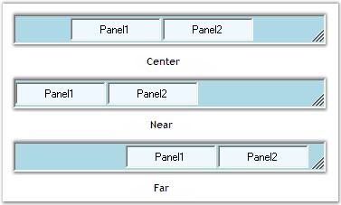
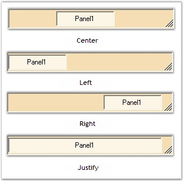

The panels and child controls that are added to the StatusBarAdv control can be aligned according to the needs of the user using the property given below.
|
StatusBarAdv Property |
Description |
|
Alignment |
Determines the alignment of the panels. The options included are given below.
· Center, · Near, · Far and · ChildConstraints. |
|
[C#]
this.statusBarAdv1.Alignment = Syncfusion.Windows.Forms.Tools.FlowAlignment.Center; |
|
[VB.NET]
Me.statusBarAdv1.Alignment = Syncfusion.Windows.Forms.Tools.FlowAlignment.Center |

Figure 1015: Alignment Options
If the Alignment property is set to 'ChildConstraints', the positioning and resizing of the panels and child controls can be set by calling the SetHAlign() method.
|
Method |
Description |
|
SetHAlign |
Sets the horizontal alignment options for the control. |
The parameters discussed for the SetHAlign() method are as follows.
|
Parameters |
Description |
|
control |
The control whose HAlign has to be set. |
|
align |
Represents the alignment option to be set for the specified control. It includes the options given below.
· Center, · Left, · Right and · Justify.
The 'Justify' option will expand the panel to occupy any extra spaces in the control. |
|
[C#]
this.statusBarAdv1.Alignment = Syncfusion.Windows.Forms.Tools.FlowAlignment.ChildConstraints;
// Sets the horizontal alignment using the SetHAlign() method. this.statusBarAdv1.SetHAlign(this.statusBarAdvPanel1, Syncfusion.Windows.Forms.Tools.HorzFlowAlign.Justify); |
|
[VB.NET]
Me.statusBarAdv1.Alignment = Syncfusion.Windows.Forms.Tools.FlowAlignment.ChildConstraints
' Sets the horizontal alignment using the SetHAlign() method. Me.statusBarAdv1.SetHAlign(Me.statusBarAdvPanel1, Syncfusion.Windows.Forms.Tools.HorzFlowAlign.Justify) |

Figure 1016: SetHAlign Options
 Note: The panels can be aligned using the
HAlign property of the StatusBarAdvPanel control. See Alignment Settings topic under
StatusBarAdvPanel.
Note: The panels can be aligned using the
HAlign property of the StatusBarAdvPanel control. See Alignment Settings topic under
StatusBarAdvPanel.